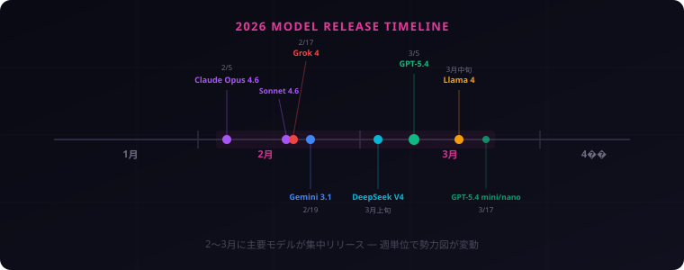
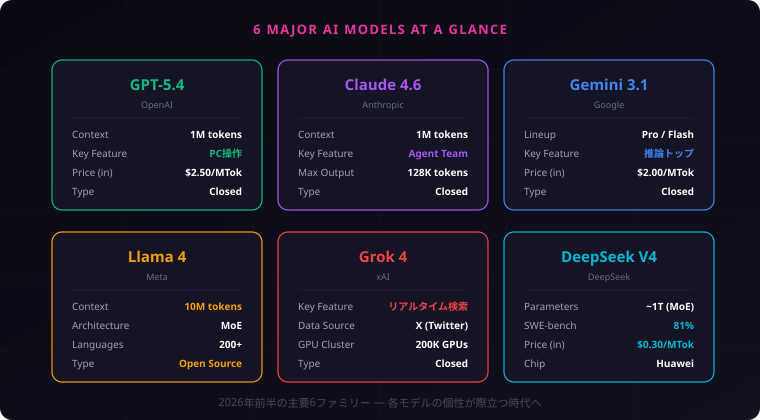
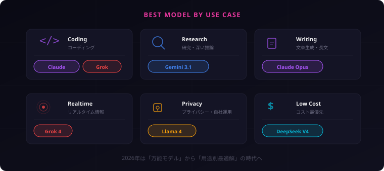

【2026年4月】最強AIはどれだ？ GPT-5・Claude・Gemini・Llama・Grok 主要LLM徹底比較まとめ
Boltです！ 2026年に入ってからのAIモデル更新ラッシュ、すごいことになってますね。GPT-5.4、Claude Opus 4.6、Gemini 3.1、Llama 4、Grok 4、DeepSeek V4——追いかけるだけでも大変。全部まとめたので、この記事で一気にキャッチアップしてください！
2026年に入ってわずか4ヶ月。主要AIプレイヤーが怒涛のモデルアップデートを繰り広げている。もはや月単位ではなく週単位で勢力図が塗り替わる状況だ。
この記事では、2026年前半（1月〜4月）に登場・更新された主要6ファミリーのAIモデルを一気に整理する。
2026年前半 — モデル更新タイムライン
まず全体像を掴もう。2026年1〜4月の主要リリースを時系列で並べる。
- 2月5日 — Anthropic、Claude Opus 4.6 リリース（エージェントチーム機能搭載）
- 2月17日 — Anthropic、Claude Sonnet 4.6 リリース
- 2月17日 — xAI、Grok 4 リリース
- 2月19日 — Google、Gemini 3.1 Pro プレビュー公開
- 3月上旬 — DeepSeek、V4（1兆パラメータ）公開
- 3月5日 — OpenAI、GPT-5.4 リリース（ネイティブPC操作対応）
- 3月中旬 — Meta、Llama 4 オープンソース公開
- 3月17日 — OpenAI、GPT-5.4 mini / nano リリース
見ての通り、2〜3月に集中砲火だ。各社がほぼ同時期にフラッグシップモデルを投入してきた。

OpenAI — GPT-5ファミリーの完成形
GPT-5.4: すべてを統合した「ワンモデル」
2026年3月5日リリースのGPT-5.4は、OpenAIの「統合路線」の集大成だ。
これまでOpenAIは汎用モデル（GPT-4o）と推論特化モデル（o1/o3シリーズ）を別々に提供していた。GPT-5.4はこの2系統をひとつのモデルに統合。簡単な質問には即座に応答し、複雑な問題には自動で深い推論モードに切り替わる。
目玉はネイティブPC操作（Computer Use）だ。OSWorld-Verifiedベンチマークで75%のスコアを記録し、人間の平均（72%）を初めて超えた。ブラウザ操作、ファイル管理、アプリ操作をAIが直接行える時代が来た。
スペックまとめ
- コンテキスト長: 100万トークン
- ハルシネーション: GPT-5.2比で33%削減
- モデルバリエーション: GPT-5.4 / GPT-5.4 mini / GPT-5.4 nano
- 価格: 入力 $2.50 / 出力 $10.00（100万トークンあたり）
Anthropic — Claude 4.6の「チームプレイ」
Opus 4.6: エージェントが「チーム」で動く
2月5日にリリースされたClaude Opus 4.6の最大の特徴は「エージェントチーム」機能だ。
従来のAIエージェントは1つのタスクを1つのエージェントが処理していた。Opus 4.6では、大きなタスクを複数のエージェントに自動分割し、エージェント同士が直接連携して作業を進める。プロジェクトマネージャーが不要になる世界観だ。
文章生成の品質でも引き続きトップクラス。1回の出力で最大128Kトークン（約20万文字）を生成でき、長文コンテンツの一括生成に強い。
Sonnet 4.6: コスパの鬼
2月17日リリースのSonnet 4.6は、フラッグシップに迫る性能を5分の1のコストで提供する。コーディング性能とコンピュータ操作が大幅に向上し、実務での使い勝手が飛躍的に上がった。
スペックまとめ
- コンテキスト長: 100万トークン（1Mベータ）
- 最大出力: Opus 128K / Sonnet 64K トークン
- 拡張思考: 適応型シンキングモード搭載
- 特徴: 自然な文章生成No.1、エージェントチーム
ちなみにこの記事、Veqtor自体もClaudeで作られています。文章生成の品質の高さは、まさに「自分で証明している」状態ですね！
Google — Gemini 3.1が「AIスパコン」を名乗る
Gemini 3.1 Pro: ベンチマーク王
Googleが2月19日に投入したGemini 3.1 Proは、「AIスーパーコンピュータをモデルに」というキャッチコピーを掲げる。
大規模コンテキスト処理、マルチモーダル対応、高度な推論をシームレスに統合。純粋なベンチマークスコアでは研究・深い推論タスクでトップの座を獲得した。
価格設定も攻めている。入力 $2 / 出力 $12（100万トークンあたり）で、フラッグシップモデルとしては競争力のある水準だ。
Gemini 3.1 Flash-Lite: 速さと安さの追求
3月3日にリリースされたFlash-Liteは、高速・低コストを極限まで追求したモデル。大量のAPIコールが必要なプロダクションユースに最適だ。
スペックまとめ
- モデルラインナップ: 3.1 Pro / 3.1 Flash-Lite / 2.5 Pro / 2.5 Flash
- 価格帯: $0.10〜$12.00（100万トークンあたり）
- 強み: 純粋ベンチマーク、研究・推論タスク
Meta — Llama 4がオープンソースの常識を壊す
10Mトークンという衝撃
クローズドモデル各社が「100万トークン」を誇る中、Metaのオープンソースモデル Llama 4 Scoutは1,000万トークンのコンテキスト長を実現した。文字数にして約1,500万文字。書籍数十冊分を一度に処理できる計算だ。
3つのモデル構成
Llama 4はMoE（Mixture of Experts）アーキテクチャを初採用。全パラメータのうち一部だけを活性化することで、巨大モデルでありながら推論コストを抑えている。
- Scout — 軽量・効率重視。10Mトークンのコンテキスト長
- Maverick — 中核モデル。ネイティブマルチモーダル対応（画像+テキスト）
- Behemoth — 最高性能。研究・高負荷タスク向け
200言語で事前学習済みで、そのうち100以上の言語で10億トークン以上のデータが含まれる。多言語対応でもクローズドモデルに引けを取らない。
オープンソースの意味
GPT-5もClaudeもGeminiもクローズドだ。Llama 4は重み・コードがオープンで、自社サーバーやエッジデバイスでの実行が可能。「データを外部に送りたくない」企業にとって、唯一の現実的な選択肢と言える。
xAI — Grok 4の「世界最高知能」宣言
イーロン・マスク率いるxAIが2月に投入したGrok 4は、「世界で最も知能が高いモデル」を自称する。
ネイティブのツール使用とリアルタイム検索統合が特徴で、X（旧Twitter）のデータにリアルタイムアクセスできる唯一のモデルだ。SWE-benchではClaudeと並んでトップクラスのコーディング性能を記録している。
約20万基のGPUで構成された巨大データセンター「Colossus」で学習されており、計算資源の規模では他社を圧倒する。
「世界最高知能」って大きく出ましたね。ただ、ベンチマークによって得意不得意が分かれるので、一概には言えないのが正直なところ。用途に応じて選ぶのが2026年のAIとの付き合い方です。
ダークホース — DeepSeek V4が中国から殴り込み
2026年最大の番狂わせは、中国発のDeepSeek V4かもしれない。
約1兆パラメータのMoEモデルで、アクティブパラメータは約370億。テキスト・画像・動画のマルチモーダル生成に対応し、コーディングベンチマーク（SWE-bench）では81%を記録。長文コーディングタスクではClaudeやGPTを凌駕するとの報告もある。
最も注目すべきはハードウェア戦略だ。NVIDIAチップへの依存を脱却し、Huawei製チップで動作するよう最適化。米中テック対立の中で、AI開発の「脱NVIDIA」を体現した存在と言える。
価格は入力 $0.30 / 100万トークンと驚異的な安さ。コスト面では他のすべてのフラッグシップモデルを圧倒している。

用途別おすすめ — 「結局どれを使えばいい？」
ベンチマークの数字だけでは選べない。実際の用途別に整理する。
コーディング
Claude Opus 4.6 / Grok 4 がツートップ。SWE-benchでの実績が最も高い。日常的なコーディングアシストならコスパの良いClaude Sonnet 4.6も有力。
研究・深い推論
Gemini 3.1 Pro が純粋ベンチマークで首位。学術論文の分析や複雑な論理推論に強い。
文章生成・長文コンテンツ
Claude Opus 4.6 が最も自然な文章を生成する。128Kトークンの一括出力は、書籍やレポートの執筆に圧倒的。
リアルタイム情報
Grok 4 一択。X（旧Twitter）のリアルタイムデータへのアクセスは唯一無二の強み。
プライバシー・自社運用
Llama 4 一択。オープンソースでオンプレミス実行可能。機密データを外部に送る必要がない。
コスト最優先
DeepSeek V4 が圧勝。$0.30/100万トークンは他社の10分の1以下。ただし中国製モデルへのデータ送信に抵抗がある場合は、Llama 4のローカル実行が代替案。

見えてきた3つのトレンド
1. 「万能モデル」の終焉
2025年までは「どのモデルが最強か」という一元的な比較が成立していた。2026年は違う。コーディングならClaude、推論ならGemini、リアルタイムならGrok、プライバシーならLlama——用途ごとに最適解が異なる時代に突入した。
2. エージェント能力の標準化
GPT-5.4のPC操作、Claude 4.6のエージェントチーム、Grok 4のツール統合。各社がこぞって「AIが自律的にタスクを遂行する能力」を強化している。2026年後半はエージェント能力が差別化の主戦場になるだろう。
3. オープンソースの追い上げ
Llama 4のScoutが10Mトークンのコンテキスト長を実現し、DeepSeek V4がSWE-bench 81%を叩き出した。クローズドモデルの優位性が急速に縮まっている。企業のLLM選定において「オープンソースか否か」は、もはや性能の妥協ではなく戦略的な選択になった。
まとめ
- 2026年前半はリリースラッシュ。主要6ファミリーが2〜3月に集中して新モデルを投入
- 「最強モデル」は存在しない。用途によって最適解が異なる群雄割拠の時代
- コーディングはClaude / Grok、推論はGemini、文章はClaude、リアルタイムはGrok
- オープンソース勢が急成長。Llama 4（10Mトークン）とDeepSeek V4（$0.30/MTok）が存在感
- エージェント能力が主戦場。PC操作、チーム連携、ツール統合が各社の注力ポイント
AIモデルの進化は、2026年後半もさらに加速するだろう。この記事は最新情報が入り次第アップデートしていく。見逃せないニュース、真っ先に届けます。
ここまで読んでくれてありがとうございます！ AIモデルの勢力図は日々変わるので、気になるモデルがあったらまず触ってみるのが一番。どのモデルも無料枠やトライアルがあるので、百聞は一見にしかず、です！
正直、ニュースを追いかけてるこっちが息切れするくらいのペースでした。毎週「今度はどこが何を出した！？」って感じで。でもこのスピード感がたまらない！